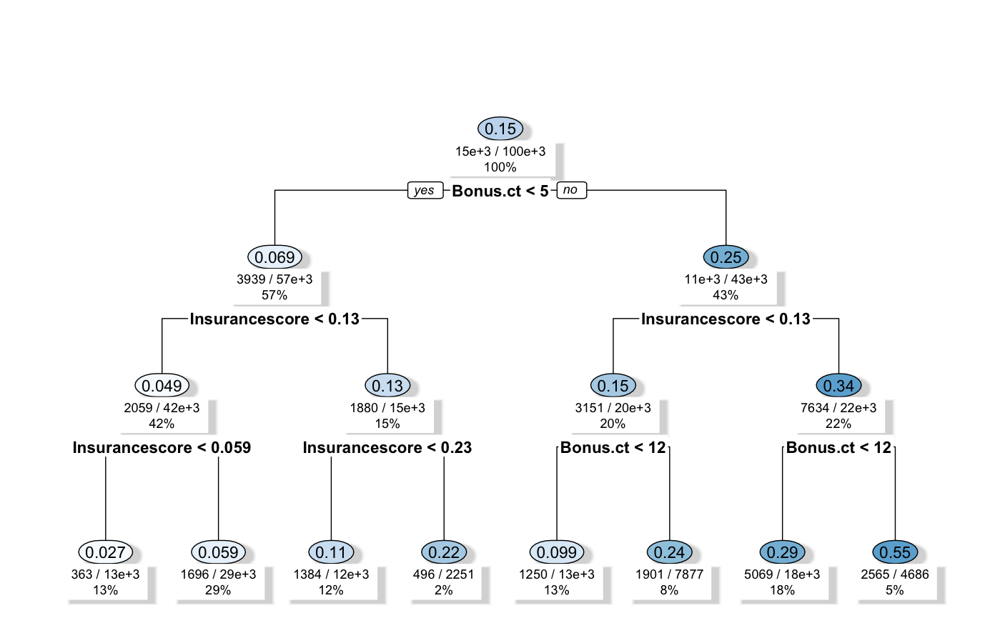
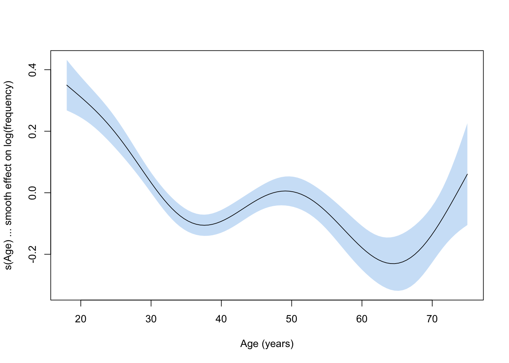
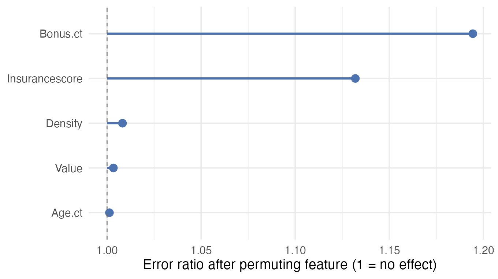
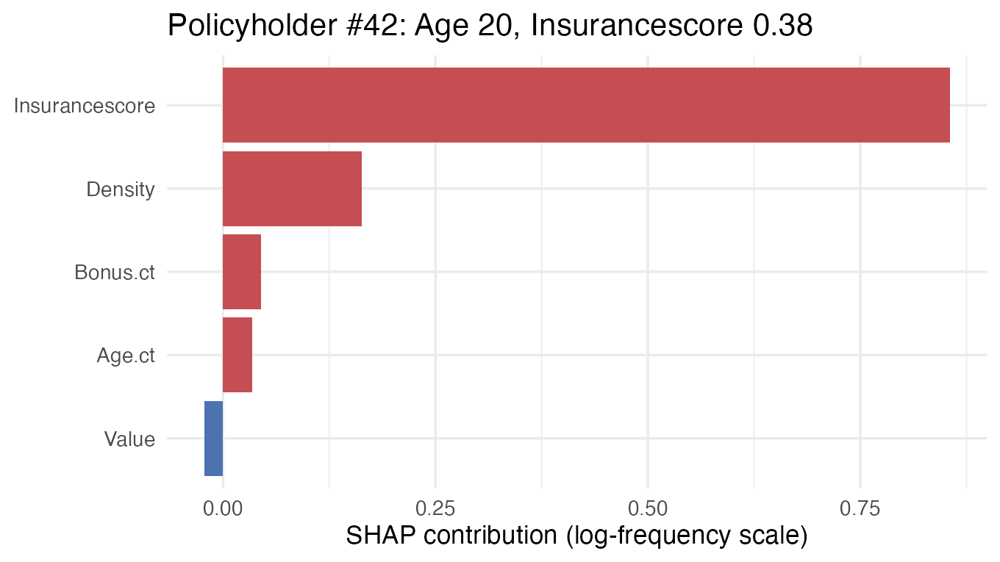
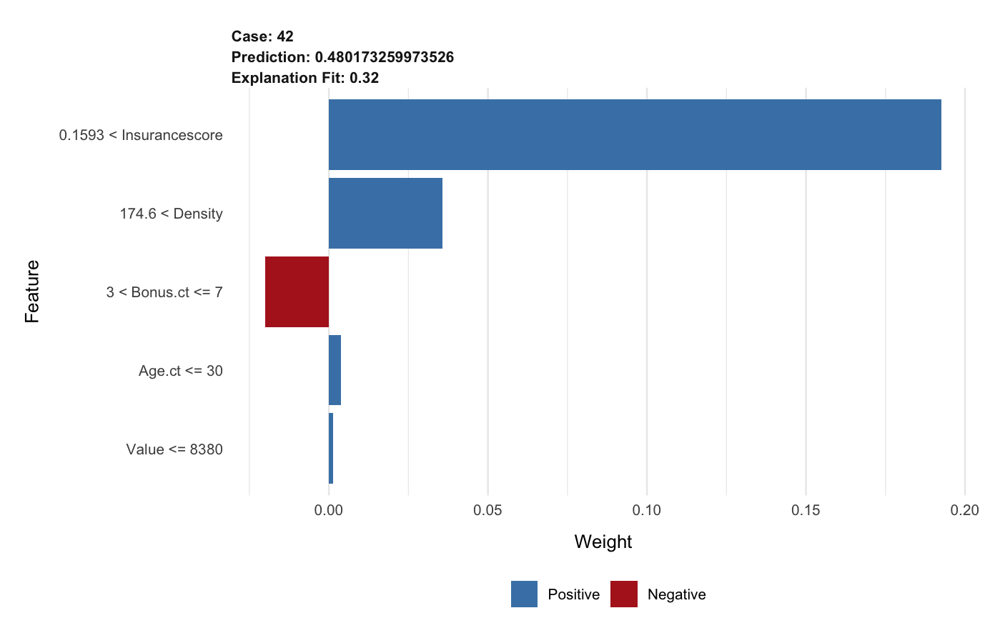

Explainability Principles
Slides — Chapter 4
Today’s roadmap
2-hour session, five parts, five discussion breaks
| Time | Part |
|---|---|
| 0:00 – 0:30 | What is explainability? Goals & stakeholders |
| 0:30 – 0:50 | Taxonomy of methods + explainable models |
| 0:50 – 1:10 | PFI & PDP |
| 1:10 – 1:20 | Break |
| 1:20 – 1:45 | SHAP & LIME |
| 1:45 – 2:00 | Validation, communication, LLMs, summary |
Learning objectives
- Define explainability, and recognise interpretability/transparency as closely related, often-interchangeable terms
- Explain why explainability matters in high-stakes domains
- Map stakeholder needs to explanation types
- Classify methods along the key taxonomic dimensions
What is explainability?
Why this matters: the toeslagenaffaire
2013–2019: a Dutch tax-authority algorithm flagged ~26,000 families for childcare-benefit fraud, weighting dual nationality as a risk factor.
Families couldn’t get a clear account of why they were flagged. Neither could the courts reviewing their cases.
Result: forced repayments, over 1,000 children removed from their homes, the Dutch government’s resignation (Jan 2021) (Amnesty International 2021).
Core definitions
Explainability: converting a model’s internal logic into a form a specific audience can understand, for a specific purpose. A model is explainable to the degree a person can understand the cause of its decision (Biran and Cotton 2017).
Interpretability is often used for the same idea. Transparency sometimes means understanding a model’s structure directly, as opposed to a post-hoc explanation built after training.
This course won’t police the boundary sharply. The key question is always: for whom, about what, for what purpose?
Why does it matter?
| Reason | Why |
|---|---|
| Human learning | Update mental models when outcomes surprise |
| Safety & testing | Confidence the model behaves correctly |
| Bias detection | A debugging tool for discriminatory patterns |
| Social acceptance | Trust and legitimacy |
| Auditing | Decisions must be visible to be evaluated |
| Right to explanation | GDPR, ASIC, EU AI Act mandate it |
When is it not required?
- Low stakes — no significant consequences from errors
- Well-established & tested — standard actuarial (insurance risk-pricing) tables, validated clinical rules
- Transparency enables gaming — fraud scoring systems
Most domains this course covers — lending, hiring, healthcare, insurance — are high-stakes by default. Explainability is generally expected.
💬 Discuss (3 min)
Think of a low-stakes automated decision you’d be fine having explained by a black box.
What made it low-stakes?
💬 Which is the wolf?
What features are you actually using to decide?
Three goals of explainability
- Improving the model — catch unintended patterns (the wolf/husky snow shortcut; a proxy variable slipping through undetected)
- Justifying predictions — different stakeholders need different verification
- Discovering insights — relationships useful for product design, pricing, science
Characteristics of good explanations
| Principle | Implication |
|---|---|
| Contrastive | “Why this, not that?” beats a full causal chain |
| Selective | 1–2 reasons accepted, even with many contributors |
| Social | Varies by audience |
| Abnormality focus | Rare features make stronger explanations |
| Consistent with beliefs | Persuasive — but watch confirmation bias |
| Faithful | Must truthfully reflect model behaviour |
Who needs explanations?
| Stakeholder | Need |
|---|---|
| Model creators | Debugging, feature engineering |
| Operators (insurers, banks, hospitals) | Compliance, governance, sign-off |
| Executors (underwriters, clinicians) | Verify outputs before acting |
| Decision subjects | Understand why |
| Auditors | Validate fairness, accuracy |
Case Study: stakeholder mapping in insurance
Actuary → “does the model behave sensibly?” (global). Underwriter → “why this premium?” (local). Customer → “why did my premium rise?” (local, plain language). Regulator → “is this fair?” (global, statistical).
Taxonomy of methods
Two primary categories
Explainability by design: GLM (generalised linear model), GAM (generalised additive model), decision trees, RuleFit (rules combined with a linear model), all inherently interpretable
Post-hoc: applied after training to explain an existing model (SHAP, PDP, LIME)
This choice is made before modelling, not as an afterthought.
Three independent axes
| Dimension | Values |
|---|---|
| Origin | Intrinsic (GLM, tree) vs. post-hoc (SHAP, PDP, LIME) |
| Applicability | Model-agnostic (SHAP, PDP, PFI) vs. model-specific (TreeSHAP, GLM coefficients) |
| Scope | Global (PFI, PDP) vs. local (single SHAP value, LIME) |
Independent axes, not a hierarchy. TreeSHAP is post-hoc + model-specific. A single SHAP value is local, and its mean absolute value is global.
💬 Discuss (3 min)
Pick a method you’ve heard of, even vaguely.
Where does it sit on the three axes (intrinsic/post-hoc, agnostic/specific, global/local)?
Explainable models, briefly
GLM: \log \mathbb{E}[Y_i] = \beta_0 + \beta_1 x_{i1} + \cdots. Each coefficient has a direct reading — this chapter’s own insurance frequency model gives Age a coefficient of -0.0049, a 0.5% drop in expected claim frequency per extra year, holding other factors fixed
Decision trees: rectangular partitions, visualisable, but unstable and prone to overfitting
GAMs: g(\mathbb{E}[Y]) = \beta_0 + f_1(x_1) + \cdots, smooth functions, more flexible than GLM, still plottable
Decision tree, a real example

GAM, a real example

The accuracy–explainability trade-off
More flexible models (boosting, neural nets) → more accurate, less explainable.
Real, but not fixed. GAMs and constrained boosting narrow the gap. Post-hoc explanation of a black box is always an approximation, never fully faithful.
PFI & PDP
Permutation Feature Importance
“A feature is important if shuffling its values increases model error.” (Molnar 2025)
Algorithm: baseline error → shuffle one column → re-score (no retraining) → importance = error change. Repeat per feature.
Strength: captures interactions, no retraining. Limitation: unrealistic combinations when features are correlated.
Case Study: reading a PFI ranking
In a motor pricing model, Age and Bonus (a driver’s no-claims discount level) dominate (expected). InsuranceScore (a non-legitimate proxy) contributes significantly too, a signal that fairness scrutiny is needed.
PFI, a real example

Partial Dependence Plots
Fix a feature to a value, average predictions across all observations, repeat across the range.
\hat{f}_j(x_j) \approx \frac{1}{n}\sum_{i=1}^n \hat{f}(x_j, x_{-j}^{(i)})
Limitation: assumes feature independence, and extrapolates into unrealistic combinations when features correlate. Use ALE instead when they do.
PDP, a real example

PD plots can be gamed
Xin et al. (2025) show the two limitations above aren’t just theoretical: a black-box model can be built so its real predictions barely change, while its PD plot for a protected or proxy variable is engineered to look flat.
Validated on real insurance and COMPAS data. A flat PD plot is not proof of fairness.
💬 Discuss (3 min)
Name two correlated features in a domain you know.
What would a PDP get wrong there?
Break — 10 min
SHAP & LIME
SHAP
Assigns each feature a Shapley value (a concept from cooperative game theory for fairly splitting credit among contributors), its average contribution across all possible feature-subset orderings (Lundberg and Lee 2017).
g(z') = \phi_0 + \sum_{j=1}^p \phi_j z_j'
The only method satisfying local accuracy, missingness, and consistency simultaneously.
Reading a SHAP waterfall
Case Study: SHAP waterfall for a premium
For one policyholder (the insurance customer), age (young) pushes the prediction up, while bonus (strong no-claims record) pushes it down. Sum of pushes/pulls from the baseline = this individual’s deviation.
“Your premium is higher than average mainly because of your age and driving history.”
This is the natural format for a customer-facing explanation. The same structure works for a declined loan or a clinical risk score.
SHAP, a real example

LIME
Fits a simple, interpretable model in the local neighbourhood around one prediction. Even a complex model may look linear nearby.
Strength: works for tabular, text, image data. Limitation: unstable. Nearby points can yield very different explanations, and neighbourhood-width choice matters a lot.
LIME, a real example

SHAP vs LIME
| SHAP | LIME | |
|---|---|---|
| Basis | Game theory | Local surrogate |
| Consistency | Guaranteed | Not guaranteed |
| Stability | High (TreeSHAP) | Low |
| Best for | Production, tree models | Quick exploration |
💬 Discuss (4 min)
A SHAP value for “Age” is high in a claims model. A colleague says: “so age causes higher claims.”
What’s wrong with that leap?
Validation, communication & regulation
Are explanations faithful?
An explanation can be plausible without being accurate.
- Sanity check: match domain knowledge?
- Consistency: similar individuals, similar explanations?
- Simulation test: perturb a feature, does its SHAP value move as expected?
- Adversarial check: could a biased model be designed to look fair? (Slack et al. 2020)
Common pitfalls
- Explanation ≠ causation — high SHAP for Age means the model uses Age, not that Age causes the outcome
- Global ≠ local — globally-unimportant feature can dominate one prediction
- Correlation blindness — PDP/KernelSHAP can extrapolate into unrealistic regions. ALE fixes this, but TreeSHAP does not automatically
- LIME instability — never present one run as definitive
- Confirmation bias — plausible-and-wrong explanations are persuasive too
- A flat PD plot ≠ proof of fairness — PDP’s own weaknesses can be exploited to hide it (Xin et al. 2025)
Regulatory expectations
- EU AI Act: high-risk systems (credit, employment, insurance) must explain to affected individuals
- GDPR Art 22: automated decisions must be explainable and contestable
- China’s PIPL Art 24: right to an explanation, and to refuse a solely-automated decision (National People’s Congress (China) 2021); NFRA also names explainability as a required AI governance element (National Financial Regulatory Administration (China) 2026)
- Singapore’s MAS FEAT (Transparency): internal documentation plus meaningful explanations to affected customers (Monetary Authority of Singapore 2018)
- Sector rules add detail: ECOA/FCRA adverse-action notices, NYC Local Law 144 bias audits, APRA CPG 234
Explainability is becoming a compliance obligation, not just good practice.
Explainability for large language models
PDP/SHAP/LIME all assume a fixed feature set. An LLM has none — tokens in a variable-length prompt, billions of parameters.
Chain-of-thought is not a faithful explanation (Turpin et al. 2023): models shift answers toward a hidden biasing feature without ever mentioning it in their stated reasoning.
Mechanistic interpretability is the emerging alternative (Templeton et al. 2024), opening the model’s internals directly rather than trusting its self-report. Still a research frontier, not a routine audit tool.
💬 Discuss (5 min) — wrap-up
If chain-of-thought text isn’t a faithful explanation —
what should you actually tell a customer, when an LLM-assisted decision affects them?
Summary
- PFI: global ranking of what matters
- PDP: average marginal effect. Use ALE if correlated
- SHAP: principled, versatile, additive contributions
- LIME: local surrogate, quick but unstable
- Plausibility ≠ faithfulness. Communication must match the audience
Recommended reading
Next class
Chapter 5 — Explainability Practice
Bring a laptop with Python installed. We’ll compute PFI, PDP, SHAP on a real pricing model.